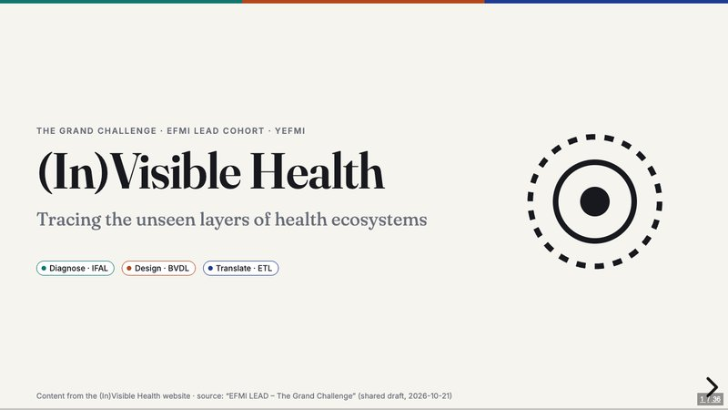
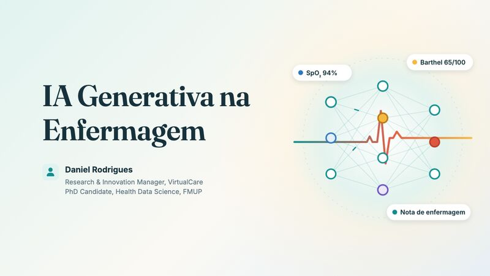
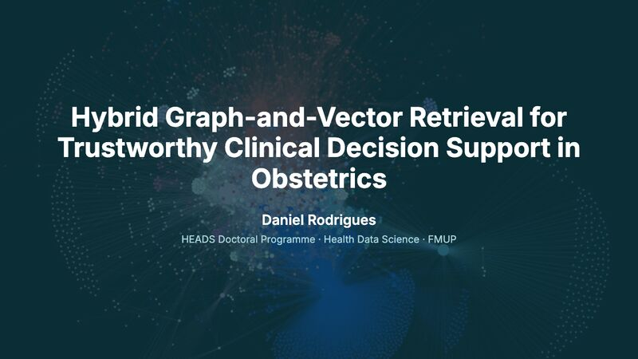
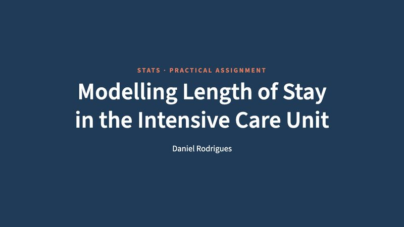
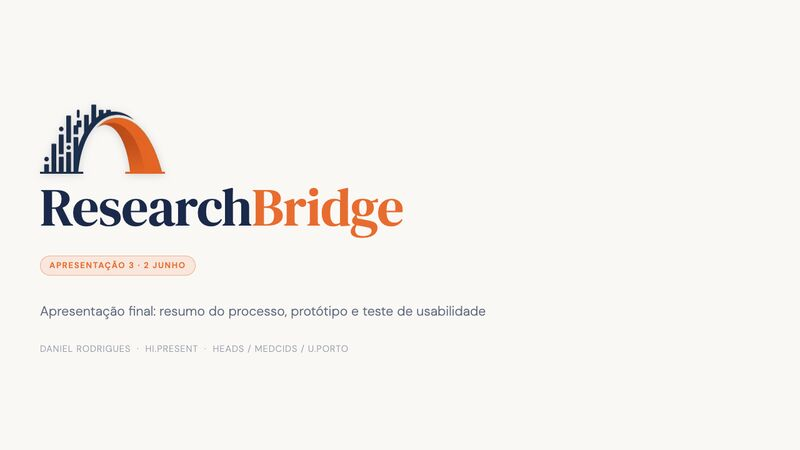
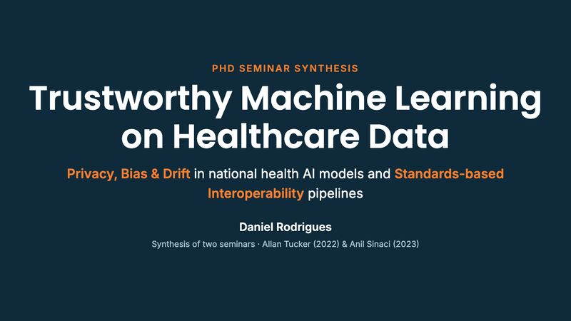
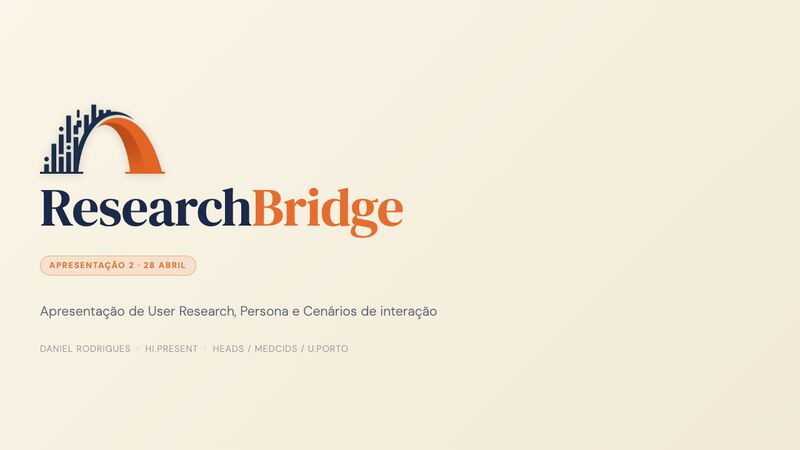
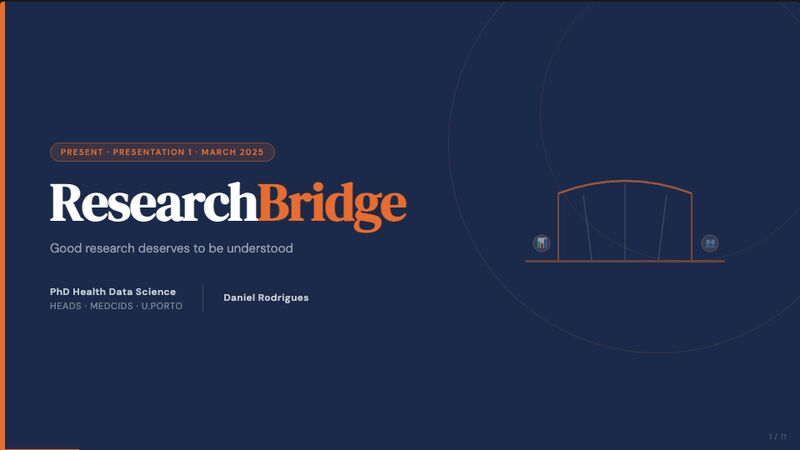

EN(In)Visible Health
O contexto de saúde que os sistemas de informação não captam: cinco camadas e cinco arquétipos de invisibilidade, respostas BMHI e a oportunidade europeia em One Digital Health.
Abrir apresentação
PTIA Generativa na Enfermagem
Fundamentos da IA generativa, casos de uso em enfermagem, alucinação e fabricação de referências, deskilling e ética, dados e responsabilidade.

ENHybrid Graph-and-Vector Retrieval for Trustworthy CDSS in Obstetrics
Recuperação híbrida, com grafos de conhecimento e vetores, para apoio à decisão clínica em obstetrícia.
100 Anos de Ciência da Computação em 10 Artigos
Da máquina de Turing à IA generativa, contada através de dez artigos.
Hybrid Retrieval for Trustworthy CDSS in Obstetrics
Protocolo de tese apresentado no Programa Doutoral HEADS da FMUP.

ENModelação do Tempo de Internamento na UCI
Trabalho prático de estatística: regressão log-linear e justificação de cada decisão de modelação.

PTResearchBridge · Processo, protótipo e usabilidade
Resumo do processo de design, protótipo e resultados do teste de usabilidade.

ENTrustworthy Machine Learning on Healthcare Data
Privacidade, viés e drift em modelos de saúde, e interoperabilidade baseada em normas.

PTResearchBridge · User research e persona
User research, persona e cenários de interação.

ENResearchBridge · Apresentação do projeto
Primeira apresentação do projeto: tornar a investigação mais fácil de compreender.
Nenhuma apresentação corresponde à pesquisa.